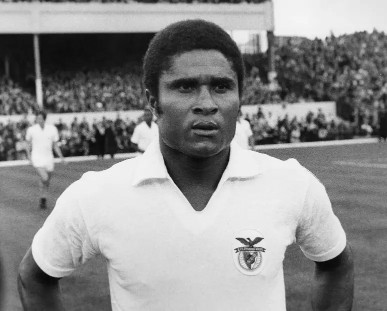

Eusébio

Eusébio da Silva Ferreira foi um futebolista português nascido na então Província Ultramarina de Moçambique durante
a época colonial. É considerado um dos melhores futebolistas de todos os tempos pela Federação Internacional de
História e Estatísticas do Futebol, especialistas e fãs.
Voltar